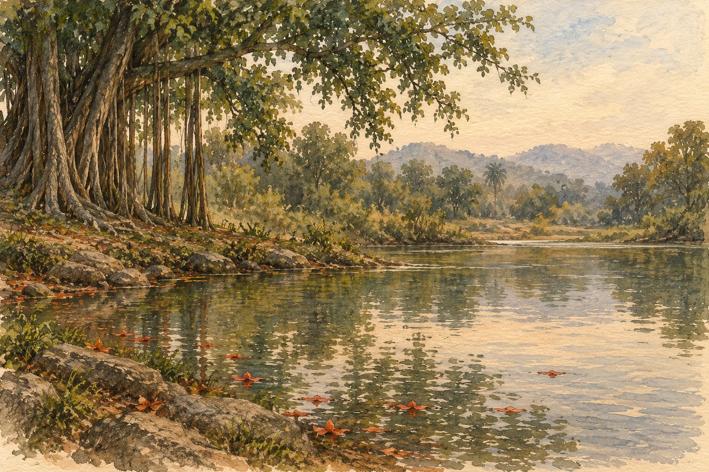

Original poem · ଓଡ଼ିଆ
ନିରଙ୍ଗ କରେ ରାହାସ

_______________
ଅକ୍ଷୟବଟେ ଅଳପକେ ବାୟୁତ
ଅନାଦି ଢାଳଇ ପୀୟୁଷ ଅବଧୂତ
ଦହକ ଅଘୋର ପିରତି ନିନାଦିତ
ଦୋଳଇ ନିରକ୍ଷ ମଣ୍ଡଳେ ଅଲେଖ ବ୍ୟାପ୍ତ ଯେ
ଅଜପା ଗାଏ ଦ୍ୟୋକାର ମାଟିଭମର
ଅଙ୍ଗଦେଶେ ବାୟୁନା ବାନ୍ଧଇ ସପ୍ତସୁର
ନିରଙ୍ଗ କରେ ରାହାସ ଆଲଟି ଚାମର
ନିରଂଜନ ନାଚଇ ଦିଗନ୍ତେ ସ୍ଵୟଂ ଶବ୍ଦସାଗର ଯେ
ପତ୍ରହରା ଗଣ୍ଡେ ବ୍ରହ୍ମପାଦପେ ନିରଗ୍ନି
ପୁରାଇ କିଂଶୁକ ପୁଷ୍ପେ ସୁପର୍ଣ୍ଣୀ
ଅମୋଘ ପରକାଶେ ହେଇ ଗୈରିକବହ୍ନି
ଅବନା ମଣ୍ଡଳେ ଖେଳେ ତାଳଦେଇ ପ୍ରଣବଧ୍ଵନି ଯେ
ଜୀବ ମଧ୍ୟେ ମତିପ୍ରଦ ଟେକଇ ମୁଣ୍ଡ
ଜ୍ୟୋତିଷ୍ମତୀ ଗର୍ଭେ ପାଇ ମେରୁଦଣ୍ଡ
ଭୁମାନନ୍ଦ ପ୍ରସବିତ ଅବନୀ କୁଣ୍ଡେ
ଭାଷା କୁସୁମ ଫୁଟଇ ନିରତ ନୀଡ଼ ତୁଣ୍ଡେ ଯେ
___________________________
( ସନ୍ଥକବିଙ୍କ ଆଲୋଚନା ପର୍ବରେ ଅନୁପ୍ରାଣିତ କବିତା)
_ଶକୁନ୍ତଳା ଗୁପ୍ତା,ରାଉରକେଲା
_________________
ଶବ୍ଦାର୍ଥ ଭାଷାକୋଷ ରୁ:
ଅକ୍ଷୟବଟ— କଳ୍ପବଟ; ପ୍ରଳଯାନ୍ତସ୍ଥାଯୀ ବଟ ବୃକ୍ଷ।—1. The mythological imperishable banyan tree.
ଦ୍ୟୋକାର— ରାଜମିସ୍ତ୍ରୀ
ଅଜପା— ବିନା ଜପରେ ଈଶ୍ବରଭଜନ; ସ୍ବାଭାବିକ ଶ୍ବାସପ୍ରଶ୍ବାସ ବହିର୍ଗମନ ଓ ପ୍ରବେଶନଦ୍ବାରା 'ହଂସଃ' ଇତ୍ଯାକାର ମନ୍ତ୍ର ଜପ।
ଭୁମାନନ୍ଦ— (କର୍ମଧା; ଭୁମା+ଆନନ୍ଦ)— ଅତ୍ଯନ୍ତ ଆନନ୍ଦ
ଅମୋଘ— 1 ପରମେଶ୍ବର—God; The Infallible. 2। ବିଷ୍ଣୁଙ୍କର ନାମ—2. A name of Bishṇu. 3। ଶିବ—3. God Siba.
ସପ୍ତ ସ୍ବର— ହିନ୍ଦୁ ସଙ୍ଗୀତଶାସ୍ତ୍ରୋକ୍ତ ସାତ ଗୋଟି ସ୍ବର—ସା, ରି, ଗା, ମା, ପା, ଧା, ନି
ପଲୀଶ— ପଲାଶ,ପଳ(ଲା)ଶ, କିଂଶୁକ, ପର୍ଣ୍ଣ, ୟାଜ୍ଞିକ, ରକ୍ତ— ପୁଷ୍ପକ, କ୍ଷାର ଶ୍ରେଷ୍ଠ, ବାତପୋଥ, ବ୍ରହ୍ମବୃକ୍ଷ, ବ୍ରହ୍ମବୃକ୍ଷକ, ବ୍ରହ୍ମୋପ— ନେତା, ସମିଦ୍ଧର, କରକ, ତ୍ରିପତ୍ରକ, ବ୍ରହ୍ମପାଦପ, ତ୍ରିପର୍ଣ୍ଣ, ପଳାଶକ, ରକ୍ତ ପୁଷ୍ପ, ପୁତଦ୍ରୁ, କାଷ୍ଠଦ୍ରୁ, ବୀଜ ସ୍ନେହ, କୃମିଘ୍ନ, ବକ୍ର ପୁଷ୍ପକ, ସୁପର୍ଣ୍ଣୀ
ଅବନି— (ଅବନୀ—ଅନ୍ୟରୂପ) ପୃଥବୀ, ଭୂଭାଗ
Poems appear in their original language. The language selector changes the website text.